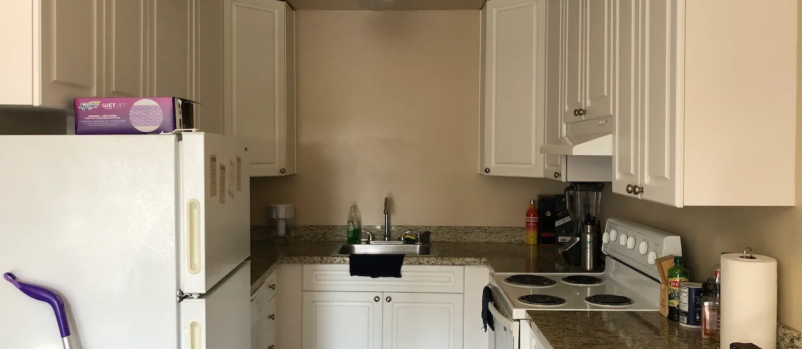

Live → Blog
September 9, 2020

Isn't it a season for transitions in the boy's life? Well the househusband returns from a new location - I mean, it is the same Palo Alto and zip code, but a new apartment complex. My family calls me Johnnie Walker, for if I am not setting off in a jet to a new place - at least before the pandemic - I am changing apartments. I am a seem to be a man eternally on the move. (I wonder if I am constantly on the run from something or towards some idealized version of a home, but that is not a subject for this blog.) I offer my reflections on my initial impressions of the new place.
One of the things I recently learned was that as a triple Taurus (Taurus Sun, Taurus Moon, and Taurus Rising), the planets have predestined for me to particularly enjoy material comforts. I was shocked by how accurately the horoscopes seemed to describe my personality and preferences. With my academic department not requiring us to show up in person through at least August 2021, I considered moving to Oakland. But I did not follow through because the apartments I kept seeing within my price range had tiny bedrooms, lacked mirrored-sliding closet doors, and did not have access to a swimming pool. That is how I came to stay within Palo Alto. Question is, is the new spot comfortable enough for my liking?
I will start with my favorite place in any house I live in: the kitchen. I love a kitchen with plenty of countertop space. The new house does not disappoint in that regard. The u-shape of the kitchen area maximizes the counter space. At the previous spot, I always felt cramped when preparing meals because of the limited countertop space. At first, I did not like the design (or color) of the stone used on these countertops. I wanted for them to be darker or something, but I have grown to love them a lot over the past few days. There are enough cupboards to contain the food and utensils. I think the drawers are smaller than I would like, but we cannot have everything. My biggest beef with this kitchen is its appliances. They are old! Even their dishwasher feels like it is from another lifetime. What kind of fridge in 2020 lacks glass shelves? What stove does not have a clock? How am I supposed to know how much time is left until dinner is due? I might install a clock somewhere in the kitchen.
The living space is a lovely rectangular shape that features both the dining area and the sitting area. At the previous apartment the dining area was an extension of the kitchen and the sitting area was a squarish area by itself. I prefer the new layout. Mostly because it is very customizable. My housemate and I invested in a decent television and sound system, so the living room is a great place to watch movies. The bookshelves and a plant I inherited from one of my favorite humans gives the living area some intellectual feel. I am definitely going to have a library in my long-term house when I eventually settle. The one thing I do not like about the living area is that it is carpeted. My previous place had a carpet-free floor and that was the move. There is beauty in sweeping an actual floor and mopping. I also could tell if the floor was dirty and needed cleaning. Spilt drinks were not a cause for concern, because I just mopped it away. But on a carpet...
Similar to the last house, my housemate and I have separate bathrooms. I am very territorial and love having my own bathroom. Hopefully eventually when I marry and settle, my wife and I can have a master bedroom with two bathrooms. I miss my previous shower head and will probably do something about this new one. An optimal shower head, for me, has a larger circumference and the water flows out at a lower pressure. I want to shower under a drizzle, not a tropical rainstorm! I also miss having plenty of space to place my numerous bath products when I shower, instead of the old tiled wall with just an obsolete soap holder. What is this? 1998? At least the shower has a glass door. I prefer the glass door to the curtain I previous had because it was a pain to clean. I also love the fact that this new house has a toilet paper holder. It is the little things that make a difference, I tell you.
Finally, my sanctuary, my bedroom. In terms of space, it is slightly smaller than my previous one. But it works because I have downgraded from a king (well, 2 twin XL beds joined together like they do in hotels) to a queen-sized bed. I also have a little hangout lounge at a corner, which I made using the twin XL bed that came with the house. It reminds me of the reading corner we had in primary school. My room is still confused in terms of its theme: the lounge area has a purple theme going, but the bed has a cream white and navy blue flavor. I am sure I will figure it out soon. But I think purple and cream-white might just be the move. I am thinking cream-white with purple accents, we will see. As I write this, the bouquet of flowers my beloved friend had sent me is dying a slow death by my bedside. It has inspired me to consider buying a plant for my room. I am excited to go plant shopping with one of my friends soon. Lastly, I have a small desk now and so my work area is a lot tidier as I cannot afford to keep stuff on the desk. When I grow up my office will not be in my bedroom.
Overall, I was a bit sad to leave my old apartment. But I am growing to love this new one as well. I cannot wait for the wildfires to pass and the pandemic to subside so I can use the much larger swimming pool at my new apartment complex. I hear this one is heated, so it will remain viable through the cold months. I was hoping for an in-unit dryer and washer but at this point in my life, I am price-sensitive. But the laundry facilities here are not bad. In fact I love the fact that I do not need coins anymore to use them and I can check the status of my laundry from my phone. I am excited to make this my home over the next year! So yes, the new spot is comfortable enough for my liking.
← Return to Blog